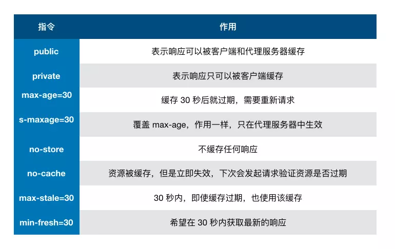

知识点
缓存位置
Service Worker
- 自由控制缓存文件、匹配规则、如何读取，并且缓存是持续性的
Memory Cache
- 内存中的缓存，读取高效，但持续时间短，随进程的释放而释放
Disk Cache
- 硬盘中的缓存，容量大、存储时效性长
Push Cache
- HTTP/2 以上未命中，才使用，缓存时间短，只在会话session存在，会话结束就释放
网络请求
缓存策略
强缓存
- 设置Http Header，缓存期间不需要请求，状态码为200
- Expires 缓存过期时间
- Cache-control 优先级高于Expires
协商缓存
缓存过期，发起请求验证资源是否需要更新，无更新返回304，并更新缓存时间。
Last-Modified
- If-Modified-Since发送Last-Modified到服务器
- 本地打开缓存文件未修改，会导致Last-Modified被修改，服务端不能命中缓存会发送相同资源
- 只能以秒计时，在不可感知的时间内修改完成文件，服务端会认为资源命中，不返回正确资源
ETag
- If-None-Match发送ETag到服务器，优先级比Last-Modified高
默认缓存策略
- 取响应头中的Date减去Last-Modified的10%作为缓存时间
实际场景应用缓存策略
频繁变动的资源
- Cache-Control: no-cache 使游览器每次请求服务器，配合ETag/Last-Modified验证资源有效性
代码文件
- 文件名进行哈希处理
- 设置Cache-Control: max-age=31536000缓存时间为一年，HTML引入文件名发生改变才下载最新的代码文件，否则就使用缓存
示例图
Cache-control 常见指令
